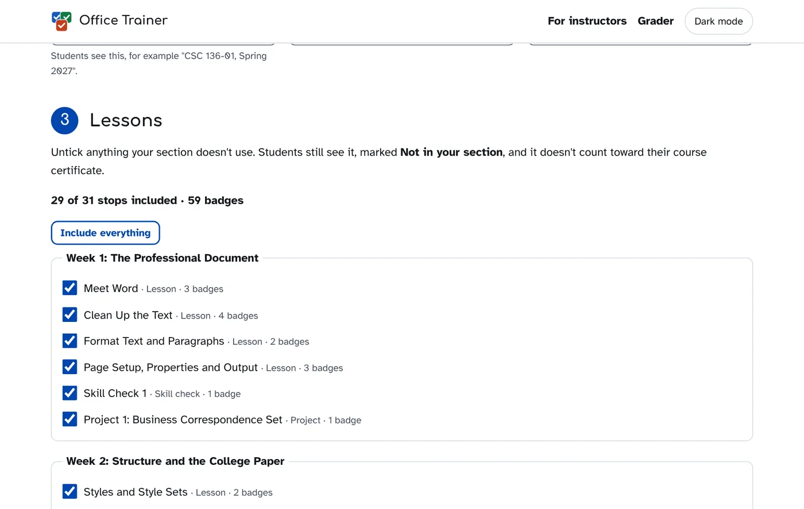
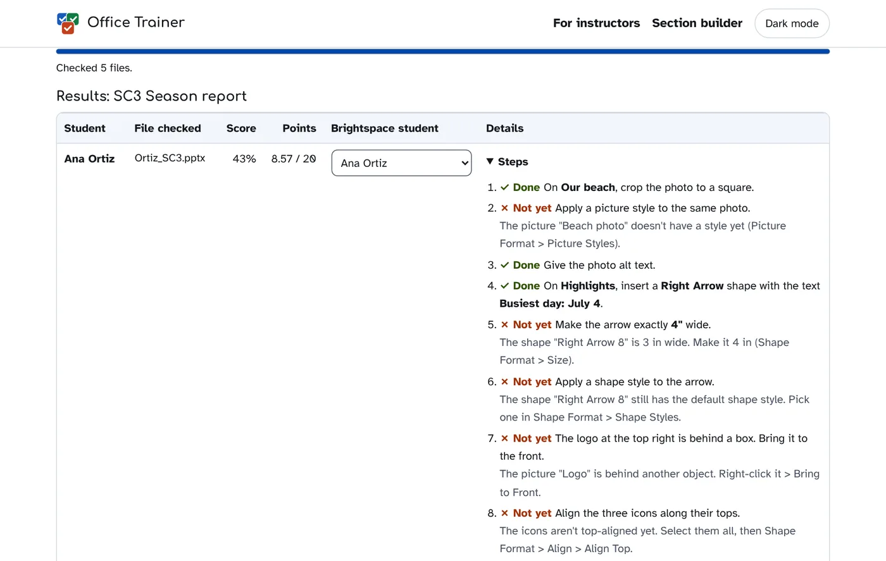

Free, for real
No license fees, no access codes, no textbook bundle and no "free trial". Every lesson, practice file, badge and certificate costs nothing, for every student.
Free for every student and every school
Short lessons, real files in the real apps, and instant feedback. Select Check my work and Office Trainer tells you what's done, what to fix, and where to find it.
Why Office Trainer
Everything a commercial skills trainer does for an Office course, without the price, the logins or the data collection.
No license fees, no access codes, no textbook bundle and no "free trial". Every lesson, practice file, badge and certificate costs nothing, for every student.
No accounts, ads, analytics or cookies. Files are checked right on the student's device and never uploaded. Progress stays in the student's own browser.
It's hosted for you at learnoffice.org. Students open a course and start; schools can add the add-in for everyone in a few clicks. No servers, no IT project.
Start here
Each course is five weeks of lessons, drills, timed skill checks and projects, built around one small business so the practice files feel real. No sign-in needed.
5 weeks · 20 lessons · 66 badges · MO-110 exam prep
Make documents people take seriously, then the ones you'll need for school and work:
5 weeks · 21 lessons · 64 badges · MO-210 exam prep
Build spreadsheets that do the math for you and show what the numbers mean:
5 weeks · 20 lessons · 54 badges · MO-310 exam prep
Make presentations people can follow, then deliver them with confidence:
Already earning badges? Open your badges page from the panel's Badges screen.
Take the tour
Real screens from the trainer, with made-up learners.
A short lesson explains one skill, with the exact menu path and a quick question to check you've got it.
Open the practice file in Word, Excel or PowerPoint and do the steps any way you like.
The trainer looks at the result, not your clicks, and tells you what's right and what to fix.
Every drill, skill check and project earns a badge. Finish a lesson for a certificate that lists the skills you showed.
Add Office Trainer to Word, Excel or PowerPoint once, and it opens as a panel next to your file. It reads the file you have open, so checking takes one click.
Works in the web apps (including on a Chromebook) and in the desktop apps on Windows and Mac. See Install.
No add-in? Open a course from this page, download each practice file, do the work in any version of the app (even on a phone), save it, and select Upload my file and check. The file is checked in your browser tab; it isn't sent anywhere.
Same lessons, same checks, same badges.
Standards and outcomes
Every course is mapped skill by skill: the college's own course outcomes, the Microsoft Office Specialist exam, Northstar Digital Literacy, career readiness and accessibility. Pick a course to see what it covers.
| Standard | Coverage | How |
|---|---|---|
| Course learning outcomes | 8 of 8 assessed | FLCC's official outcomes for the course, each assessed in a project, skill check or the capstone |
| Microsoft Office Specialist: MO-110 Word Associate (Microsoft 365 Apps) | 71 of 71 exam skills practiced | Every skill on Microsoft's outline has a drill; weekly skill checks and a timed practice exam cover every domain |
| Northstar Digital Literacy: Microsoft Word | 14 of 14 standards | Each standard is practiced in a named drill |
| NACE Career Readiness Competencies | 8 competencies | Communication, technology, teamwork and more, built into the projects |
| DigComp 3.0 (European Digital Competence Framework) | 5 competence areas | Content creation, collaboration, safety and problem solving |
| WCAG 2.1 AA (ADA Title II) | 9 success criteria practiced | Learners make accessible files as they go: alt text, headings, contrast, reading order |
See the full Word course map: every week, drill, skill and rubric.
| Standard | Coverage | How |
|---|---|---|
| Course learning outcomes | 7 of 7 assessed | FLCC's official outcomes for the course, each assessed in a project, skill check or the capstone |
| Microsoft Office Specialist: MO-210 Excel Associate (Microsoft 365 Apps) | 64 of 64 exam skills practiced | Every skill on Microsoft's outline has a drill; weekly skill checks and a timed practice exam cover every domain |
| Northstar Digital Literacy: Microsoft Excel | 17 of 17 standards | Each standard is practiced in a named drill |
| NACE Career Readiness Competencies | 6 competencies | Communication, technology, teamwork and more, built into the projects |
| DigComp 3.0 (European Digital Competence Framework) | 5 competence areas | Content creation, collaboration, safety and problem solving |
| WCAG 2.1 AA (ADA Title II) | 7 success criteria practiced | Learners make accessible files as they go: alt text, headings, contrast, reading order |
See the full Excel course map: every week, drill, skill and rubric.
| Standard | Coverage | How |
|---|---|---|
| Course learning outcomes | 7 of 7 assessed | FLCC's official outcomes for the course, each assessed in a project, skill check or the capstone |
| Microsoft Office Specialist: MO-310 PowerPoint Associate (Microsoft 365 Apps) | 73 of 73 exam skills practiced | Every skill on Microsoft's outline has a drill; weekly skill checks and a timed practice exam cover every domain |
| Northstar Digital Literacy: Microsoft PowerPoint | 17 of 17 standards | Each standard is practiced in a named drill |
| NACE Career Readiness Competencies | 6 competencies | Communication, technology, teamwork and more, built into the projects |
| DigComp 3.0 (European Digital Competence Framework) | 5 competence areas | Content creation, collaboration, safety and problem solving |
| WCAG 2.1 AA (ADA Title II) | 11 success criteria practiced | Learners make accessible files as they go: alt text, headings, contrast, reading order |
See the full PowerPoint course map: every week, drill, skill and rubric.
For instructors
Choose the lessons, add your own videos and grade a whole class's files in minutes. These tools run in your browser too: no accounts, and students' files and names never leave your computer.
Tick the lessons your class uses, swap in your own videos or add new ones, and get a section key. Students paste it into the panel once. Lessons you leave out are marked "Not in your section" and don't count toward the course certificate.

Download an assignment's submissions from Brightspace and drop the zip on the grader. It runs the same checks students see, on their actual files, and gives you a score and step-by-step notes for each student.

Outcomes, outline topics, weekly objectives, every drill and its exam skills, and how each outcome is assessed.
Word · Excel · PowerPoint
Lessons are plain Markdown. The lesson editor checks your changes and previews them as students will see them.
Every check is tested against answer keys on each course's test page, for example the PowerPoint checker tests.
One add-in works in all three apps. Install it once and it shows the right course in each. Or skip this entirely and use the courses in your browser.
manifest.xml and select Upload. An Office Trainer button appears on the Home tab.If you clear your browser data or switch browsers, upload it again. Some schools turn off uploading add-ins; if the option isn't there, ask your IT office.
A Microsoft 365 administrator can give it to everyone at once, so nobody uploads anything: Microsoft 365 admin center > Settings > Integrated apps > Upload custom apps, choose Office Add-in as the app type, upload manifest.xml and pick who gets it. It can take up to a day to appear.
The add-in asks only for access to the file that's open, so it can read it for checking and open practice files. It can't see anything else on your computer or account.
Office Trainer was built to need nothing from you.
You don't need to run anything: the hosted site at learnoffice.org is for everyone. And because it's open source, you can see exactly how it works, or make your own copy.
Yes. There's no paid version, no access code and nothing to buy, for students or schools. Finger Lakes Community College built it to replace a paid trainer, and shares it with everyone.
No. Students open a course and start. Their progress is saved in their own browser, and they can save a copy as a file to move it to another computer.
No. The courses run from learnoffice.org in any browser. Installing the add-in (yourself, or for everyone through the Microsoft 365 admin center) is optional: it puts the trainer right inside Word, Excel and PowerPoint.
Yes. The add-in works in the Office web apps (so on a Chromebook) and in desktop Office on Windows and Mac. In a browser, students can do the work in any version of the app, even on a phone, and upload the saved file to check it.
Students hand in their files as usual. The grader checks the whole batch in your browser and makes a grade file to import into Brightspace and feedback files to attach to each submission. Nothing is sent to anyone else.
Every skill on the MO-110 (Word), MO-210 (Excel) and MO-310 (PowerPoint) Associate exam outlines is practiced in a drill, and each course ends with a timed practice exam. Office Trainer isn't made or endorsed by Microsoft.